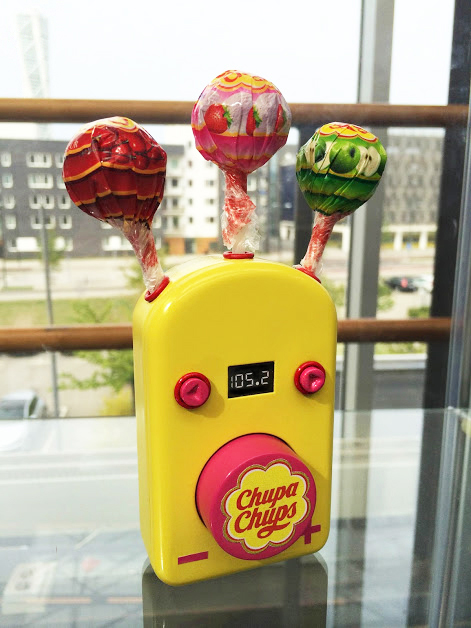
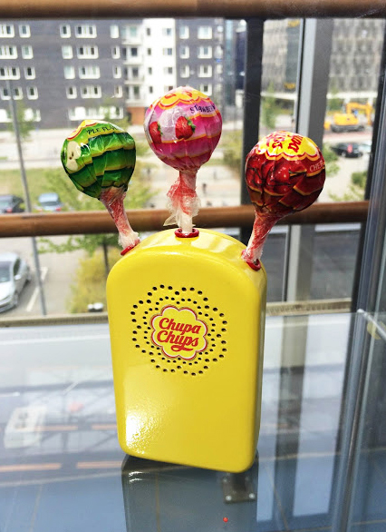
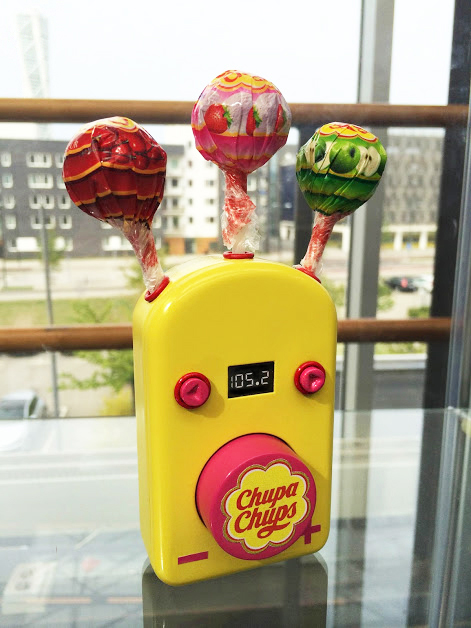
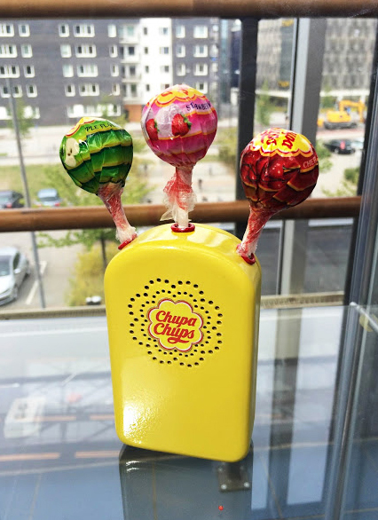

Mini radio towards the company Chupa Chups. The brand is mostly famous of their lollipops that are sold in over 150 countries around the world. We wanted to express their playfulness and use their colorful palette. The idea behind the radio is to contribute a new product to their sortiment that amplifies to their motto “Life less serious”. The mini radio can be used as your own lollipop stand, or as a temporary holder, preserving the lollipop when without paper. It is designed with a fine mix of simplicity and extravagance, appealing to a larger target group.
 


